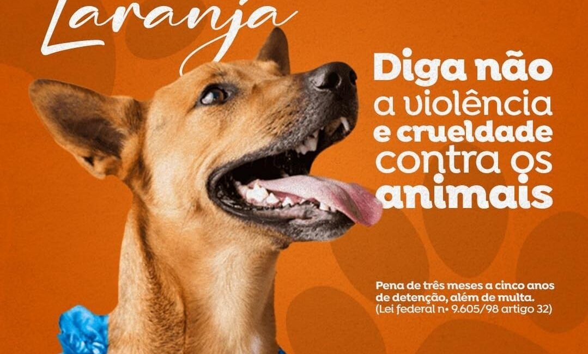
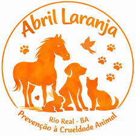

🐶 ONGs
Organizações de proteção animal
Como ajudar
- Doações
- Voluntariado
- Adoção
- Divulgação
 |
 |
 |
O que são ONGs?
ONGs (Organizações Não Governamentais) são instituições sem fins lucrativos que atuam em causas sociais, ambientais e na proteção animal.
Elas realizam resgates, campanhas de conscientização e promovem a adoção responsável, dependendo do apoio da população.
Exemplos de ONGs
| Nome | Missão |
|---|---|
| Ampara Animal | Resgate e proteção de animais em risco |
| Proteção Animal Brasil | Combate aos maus-tratos |
| World Animal Protection | Defesa global dos animais |
|
 |
Logo do Abril Laranja com silhuetas de animais e mensagem de combate à crueldade animal. |
Como ajudar uma ONG?
- Fazendo doações
- Adotando animais
- Divulgando nas redes sociais
- Trabalhando como voluntário
Mensagem
As ONGs são essenciais para proteger os animais. Ao ajudar uma organização, você contribui para salvar vidas.